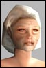

| Author | Thread |
TeffaMA
Supa Leet
 Registered: Dec 2002
Posts: 9 | I guess the funny arrow was implanted with MAs in mind =D |
Cronost
Soleet
 Registered: Apr 2002
Posts: 48 | Rofl.
Please Anikitos, tell them how you almost killed me today. 
Well... Ani asked me to "test" my fist dmg on him. He chain casted layers... I emptied my nano pool healing myself from the shield dmg.
At the end he was at 60% hp, I was at 30%, my nano pool was empty. That was really fun.  *Silent Bump*
*Silent Bump* |
HosT
EleetRegistered: Feb 2002
Posts: 14 | Yeah its kinda sad not see any of the old skool MA PvP'ers at the biggest tower battle i have seen in a while when we took down Legion base, on clan there was 1 MA(Disciple092) out of 50ish clanners lol.......
Something is wrong
On a side note NTs are the best mass PvP proffesion by far atm |
Hollowbyte
SoleetRegistered: Mar 2002
Posts: 47 | heh yea, thats why i switched to a doc and instead of playing a 187 MA i played a 145 doc in that tower battle yesterday. i was amazed how much more usefull i was even at such a low level to the TL6 people. at least i got to run around and init debuff as many opponents as possible and healed and buffed a lot.
i also was inmvolved in taking down 2/3 enemy MAs, i felt real sorry for them, they went down so unbelievably easy and fast. all bow users, didnt even dent me and they were around 200, i'm 145. my temp HoT and temp HP absorbed it all and healed me right back without me even having to do anything.
and no, i havent purchased NW and wll not unless/until funcom fixes MA PvP. and yes, i have cancelled my account and they have basically until it expires to implement a successfull, practical, viable, usable fix or fixes in order for me to reactivate.
Hollowtek RK-1
ACCOUNT STATUS
Cancelled
This account was cancelled at:
2002-11-16 00:29:11
It will remain playable until : 2003-02-12 23:08:06 |
James Hetfield
Leetas
 Registered: Jul 2002
Posts: 58 | I only read two posts and here is my opinion on the whole thread:
Don't EVER speak highly of one agent's skill, god knows what we would do if it was nerfed (100% crit) even though that crit buff isnt all that powerful, something usually happens and you'll only get off one shot even if you're both at full agg and you are full loaded.
two: Why give MAs all of there power back? So they can be the best again, what about the other classes? Try to BALANCE us!
Though, MAs do need SOME help... I killed a level 200 MA the other day in ent arena with only his dimach hitting me.... other than that he was too far away to touch me... Last edited by James Hetfield on December 25th, 2002 at 06:10 |
Nealandbob
Supa Leet
 Registered: Nov 2001
Posts: 356 | BUMP for un-nerfing MA's. I'm not really into PvP, so I don't know *what* the fix should be. But it had better be pretty good, I think.
The MA nerfs were too severe, and too sudden. And I hate to see another Melee class hurting 
*hugs* to all my MA friends |
taitou
Leet
 Registered: Jan 2003
Posts: 6 | I heard someone wanted some ideas on how to win PvP. Level 87 MA freshman. Been winning alot lately. I get a run buf from a fixer, max ma and brawl... Then i come into the target brawl, usually they run so i run with them, dimach, then BwT. Also have my nano resist maxed out. |
Disciple092
Soleet
 Registered: May 2002
Posts: 153 | Wow Taitue,thx for the awesome advice.
Ever since i maxxed my MA and Brawl and started attacking strictly with Brawl and BWT i have become much more viable aginst all other classes now.
I attacked an enforcer with EQB the other day and sure enuff as soon as brawl hit him he ran for the hills.Even with his rage running i had no problem catching up to him to lay on the BWT.
Experienced Disciple092.....HERE I COME!!!!!! |
assassimon
Clan Apocalypse
 Registered: Nov 2001
Posts: 1522 | quote:
Originally posted by Disciple092
Wow Taitue,thx for the awesome advice.
Ever since i maxxed my MA and Brawl and started attacking strictly with Brawl and BWT i have become much more viable aginst all other classes now.
I attacked an enforcer with EQB the other day and sure enuff as soon as brawl hit him he ran for the hills.Even with his rage running i had no problem catching up to him to lay on the BWT.
Experienced Disciple092.....HERE I COME!!!!!!
LOL, I knew there was something we had missed |
Infamine
Phear LeetRegistered: Dec 2001
Posts: 400 | Bumpzor, MA suck harder than min dmg bug atm and i miss Celestiness |
taitou
Leet
Registered: Jan 2003
Posts: 6 | hehe np. One time i was fighting a trader, he killed me but i killed him also. I died first, can you guess how it happen? The BwT got him after i had died It's happened several times. |
NoHope
Soleet
 Registered: Sep 2002
Posts: 65 | quote:
Originally posted by Metallica86
Why give MAs all of there power back? So they can be the best again, what about the other classes? Try to BALANCE us!
Though, MAs do need SOME help... I killed a level 200 MA the other day in ent arena with only his dimach hitting me.... other than that he was too far away to touch me...
So he got rooted? 
Hmm, would he have killed u pre-nerf anyway when he only hitted u with dimach?
Guess not, so why were MAs the best prof then? |
Hajkster
Supa LeetRegistered: Mar 2002
Posts: 831 | quote:
Originally posted by Disciple092
Wow Taitue,thx for the awesome advice.
Ever since i maxxed my MA and Brawl and started attacking strictly with Brawl and BWT i have become much more viable aginst all other classes now.
I attacked an enforcer with EQB the other day and sure enuff as soon as brawl hit him he ran for the hills.Even with his rage running i had no problem catching up to him to lay on the BWT.
Experienced Disciple092.....HERE I COME!!!!!!
Be nice ;P |
Hajkster
Supa LeetRegistered: Mar 2002
Posts: 831 | quote:
Originally posted by Infamine
Bumpzor, MA suck harder than min dmg bug atm and i miss Celestiness
Same! And lonehawk... =( |
All times are GMT.


 Last Thread Next Thread
Last Thread Next Thread 
 December 24th, 2002 05:38
December 24th, 2002 05:38